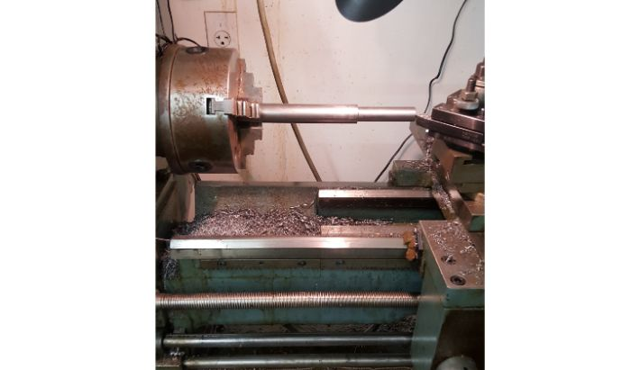
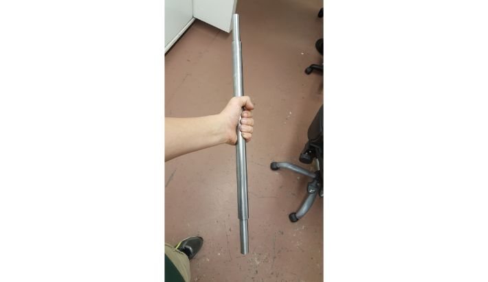

Background
This project is one of my all-time favorites for its "why not?" inspiration. Almost no unexpected issues occured, everything miraculously went more or less according to plan, a very rare occurance. I am quite happy with the final product, and I use it to get around town on a daily basis. It tops out at about 23 mph.
Some modifications I have made since the completion of this project include:
- The replacement of the old SLA batteries with lithium-iron-phosphate. The old batteries frankly sucked and constantly sagged in voltage and were heavy. I am very happy with the lithium pack.
- The replacement of the scooter motor with a 1000w 48v hub motor straight out of an e-bike conversion kit. The old motor burnt out on me (due to over voltage - It was rated for 36v and I had 48v of batteries and a 48v controller). I welded a mount for it out of some 1" x .25" bar stock and bolted it down.
- The replacement of the HDPE steering column support bushing with one made from delrin after my homebrew HDPE cracked.
Frame
I started this project with an old school desk that the high school janitors kindly let me keep.
 The old school desk, courtesy of the janitorial staff.
The old school desk, courtesy of the janitorial staff.
The basic frame for this gokart consists of 1" square steel tubing with a wall thickness of 0.125". I simply cut the steel to "connect the dots" between the chair legs, and welded them together. I also welded on two shorter lengths of steel perpendicular to the rear base of the frame to mount the pillowblocks that would eventually accomodate the 1" axle.
Frame welded up.
 Pillow block supports.
Pillow block supports.
 Pillow blocks mounted.
Pillow blocks mounted.
Rear Axle
I machined the axle out of 1" cold rolled steel round bar. I turned down the ends to 5/8" to accomodate the hubs of the wheels.
 Turning down the end to fit the wheel.
 Axle profile roughed out.
I tapped the ends to accept bolts to hold the wheels in place.
Axle profile roughed out.
I decided the gokart would be one wheel drive. This allows the rear wheels to turn independently of one another, eliminating the need to spend hundreds of dollars on a gokart differential. This increases tire life and makes turns smoother. With that in mind, I milled a 3/16" keyway into one end of the axle for the drive wheel hub, leaving the other end unkeyed to accept the free wheel hub.
 Milling the keyway.
Milling the keyway.
With that, the axle machining was complete. Here are some photos of the axle layout (minus brake disc)
Everything but the brake disc.
 Axle on the gokart (note the basket that wasn't there before- see the battery tray section below).
Axle on the gokart (note the basket that wasn't there before- see the battery tray section below).
Brake Disc Hub
Upon deciding to use bicycle disc brakes on the gokart, I had to figure out a way to mount the disc to the axle. So, I machined a hub out of aluminum with a 1" bore to fit the axle and put a keyway in it.
To make placing the disc easier, the hub features a small turned centering ring that locates the center of the disc.
 Turning the hub. Note the small centering ring protrusion.
Turning the hub. Note the small centering ring protrusion.
The centering ring allowed me to concentrically place the disc on the hub and then mark the hole pattern. I drilled and tapped the holes for the hardware included with the disc, and then attached the disc to the hub.